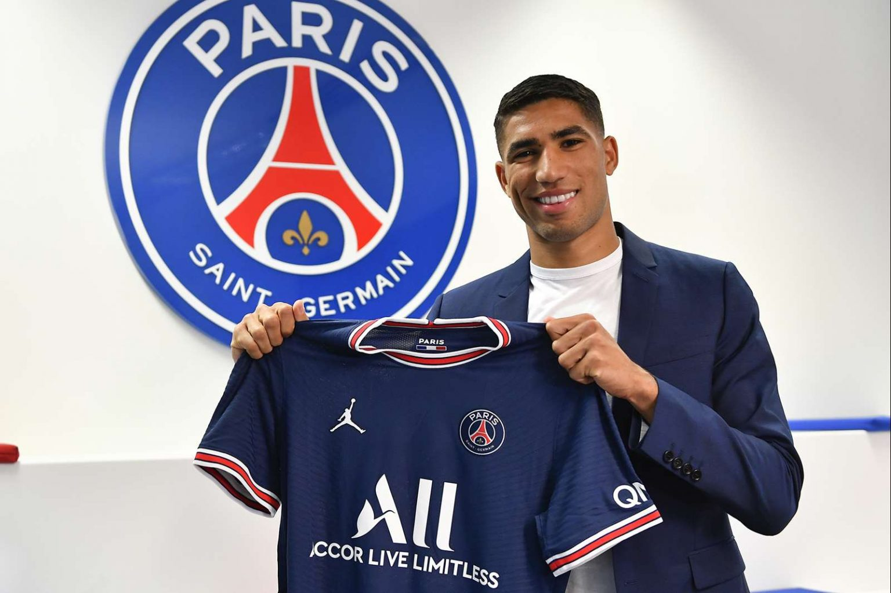
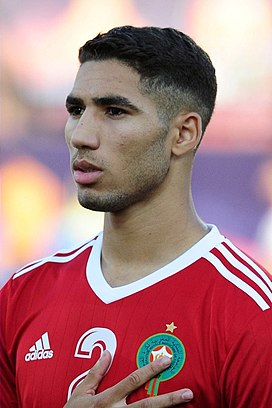

Achraf Hakimi (árabe: / أشرف حكيمي/; pronunciado /aːʃ.raːf ħaːkiˈmiː/; Madrid, España, 4 de noviembre de 1998) es un futbolista marroquí. Juega como defensa en el París Saint-Germain F. C. de la Ligue 1 de Francia. También es internacional absoluto con la selección de Marruecos. Jugador versátil y de gran potencia, fue elegido como el mejor jugador joven africano de 2018 y 2019 —considerado Balón de Oro africano de menores de 21 años—, así como integrante del mejor equipo del año de la Confederación Africana de Fútbol y es considerado como una de las jóvenes promesas del fútbol africano, y uno de los laterales con mayor proyección mundial.
Empezó a jugar en el año 2005 en el Club Deportivo Colonia Ofigevi de Getafe hasta que ingresó un año después en las categorías inferiores del Real Madrid Club de Fútbol. Incorporado en las filas del primer equipo de benjamines, fue progresando por cada uno de los equipos inferiores del club hasta llegar en 2016 a formar parte de la plantilla oficial del primer equipo filial, el Real Madrid Castilla. Antes, el jugador fue uno de los más destacados en su etapa juvenil en el club, con quienes disputó la Liga Juvenil de la UEFA en sus ediciones de 2014-15 y 2015-16 para un total de dieciséis partidos, tres goles y dos asistencias.
El 21 de agosto de 2017, el Real Madrid Club de Fútbol hizo oficial la promoción de Achraf del equipo filial al primer equipo, en el que lució el dorsal 19. Debutó en partido oficial con el Real Madrid el 1 de octubre de 2017 en un encuentro de Liga disputado contra el RCD Español en el Santiago Bernabéu, en el que los blancos vencieron por 2-0. Achraf conseguiría anotar dos goles en su primera temporada con el club, el primero el 9 de diciembre en la goleada 5-0 sobre el Sevilla por la decimoquinta jornada de Liga, y otro frente al Celta de Vigo en la victoria 6-0 del equipo madridista. El 11 de julio de 2018 el Borussia Dortmund consiguió su cesión para las dos siguientes temporadas. Hizo su debut oficial con el conjunto alemán el 26 de septiembre de 2018 en un partido de la Bundesliga, en un encuentro que acabaría con una contundente victoria 7-0 sobre el Núremberg, en la que incluso conseguiría anotar un gol. Desde el citado partido se asentó como uno de los titulares del equipo durante la temporada hasta sufrir una lesión en primavera que le impidió jugar los últimos partidos del equipo. Finalizó su primer año con un total de 28 partidos en los que anotó tres goles y dio siete asistencias.
Tras partir desde la suplencia pronto volvió a la titularidad en la temporada 2019-20, alternándose en ambos laterales según las necesidades del equipo. Se proclamó campeón de la DFL Supercup al vencer su equipo por 2-0 al Fußball-Club Bayern en la final celebrada en Dortmund, en donde jugó un cuarto de hora al sustituir a Raphaël Guerreiro. Su primer gol en el nuevo curso se produjo en la segunda jornada de liga frente al Fußball-Club Köln que terminó con victoria por 1-3. Sus actuaciones se convirtieron en un pilar para el equipo como tercer máximo asistente y cuarto máximo goleador desde su posición de defensa en la primera mitad de la temporada. Entre ellos destacaron cuatro goles en la Liga de Campeones, anotando el primero de su carrera en la competición el 2 de octubre en la victoria por 0-2 frente al Sportovní Klub Slavia Praga, siendo el autor de ambos tantos. Dichos registros le llevaron también a actuar como centrocampista carrilero o interior sobre una defensa de tres centrales, ocupando una de las alas, en las disposiciones más verticales del equipo. Pudo así enfocarse más en tareas ofensivas donde asistir a los referentes del equipo en ataque, Marco Reus y Jadon Sancho. En los octavos de final de la Liga de Campeones se enfrentó al candidato al título París Saint-Germain Football Club liderado por Neymar y Kylian Mbappé. Abandonó el equipo alemán tras finalizar la temporada 2019-20 y expirar los dos años de préstamo.
El 2 de julio de 2020 el Real Madrid C. F. confirmó, mediante un comunicado oficial en su página web, el acuerdo de transferencia con el Inter de Milán por una cifra de 40 millones de euros. El 26 de septiembre debutó y dio una asistencia en la victoria por 4-3 contra la ACF Fiorentina en la Serie A. Marcó su primer gol con el club en el siguiente partido de liga contra el Benevento Calcio que el Inter ganó por 5-2. El 2 de mayo de 2021 quedó campeón de la Serie A. Tras un año en Milán, el 6 de julio de 2021 se hizo oficial su traspaso al París Saint-Germain F. C., equipo con el que firmó un contrato para las siguientes cinco temporadas. Según The Guardian, el precio pagado por el PSG era de 60 millones de euros iniciales, que podrían aumentar en 11 millones de euros en variables. El 7 de agosto, en su primer partido en la Ligue 1, marcó su primer gol con el equipo que servía para poner el momentáneo empate a uno en el triunfo ante el E. S. Troyes A. C.